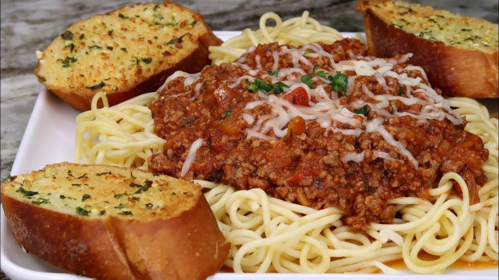

Spaghetti

Description
If your tired of the traditional spaghetti noodles with sauce poured over, give this one a try. This is the only way my family will eat their spaghetti.
Ingredients
- ½ pound ground beef
- 1 small onion, chopped
- 2 (8 ounce) cans tomato sauce
- 1½ cups water
- 1½ teaspoons salt
- 1 teaspoon dried parsley
- ½ pinch dried basil
- ½ teaspoon black pepper
- 4 ounces uncooked spaghetti
Steps
- In a large skillet over medium heat, brown the ground beef with the onion until all pink is gone; drain.
- Stir in tomato sauce, water, salt, parsley, basil and pepper; mix well. Heat until sauce boils. Break spaghetti in half and drop into sauce a little at a time. Cover and turn to low.
- Cook until spaghetti is tender, approximately 20 to 25 minutes. Stir occasionally to keep from sticking to pan and from noodles sticking together. Add water, 1/2 to 1 cup, if it starts to dry out and noodles are not cooked.